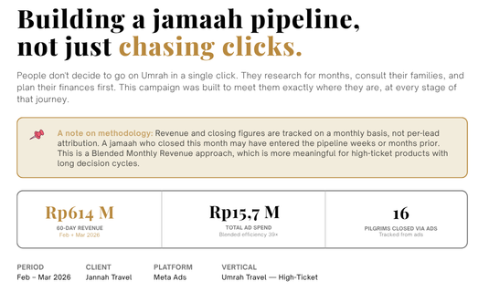

Budget iklan kamu harusnya balik jadi cuan, bukan cuma angka reach yang bagus di laporan.
Udah 6+ tahun gonta-ganti industri — dari travel, jam tangan mewah, wedding venue, sampai produk digital. Yang saya pelajari: settingan iklan yang "kelihatan bagus" dan yang "beneran menghasilkan" itu dua hal berbeda. Pernah scale satu funnel sampai 44.5x ROAS — dan saya bisa cerita gimana caranya.
Ngobrol dulu yukDari riset audience sampai struktur TOF/MOF/BOF yang beneran nyambung satu sama lain, bukan campaign yang jalan sendiri-sendiri.
Kadang budget bocor bukan karena strateginya salah total, tapi ada satu-dua hal kecil yang kelewat. Saya bantu cari itu.
Nggak perlu bolak-balik buka Ads Manager tiap hari buat tahu campaign mana yang jalan. Saya biasa bikinin dashboard sendiri buat ini.
Iklan bagus tapi landing page-nya nggak nyambung ya percuma. Saya pegang dua-duanya biar satu alur.
Butuh landing page, website company profile, atau bahkan tool internal kayak dashboard ini? Saya bisa bikinin, termasuk deploy-nya.

[ screenshot_jannah.png ]Ini salah satu yang paling saya banggain. Pegang full-funnel Meta Ads buat paket Umrah, dari orang lihat iklan sampai beneran daftar dan bayar.
- Rp614 juta booking cuma dari Rp15.7 juta ad spend (Feb–Mar 2026)
- ROAS rata-rata ~39x, pernah nyentuh 44.5x
- CPA serendah Rp867rb-an, dan 88% lead yang masuk memang qualified — bukan cuma ramai doang
 [ dashboard_digiproduct.png ]
[ dashboard_digiproduct.png ]
Ini project testing funnel buat produk digital seorang KOL. Saya coba beberapa struktur (BOF, MOF, retargeting) buat lihat mana yang paling efisien.
- Funnel MOF ternyata paling jago — nyumbang ~91% total pembelian di ROAS 4.93x
- Total blended ROAS ~4.6x dari 336 pembelian
- CTR sampai 3.84% di kampanye yang paling top
Jujur aja, saya sekarang kerja pakai AI buat hampir semua hal — bikin laporan, nyusun dashboard, sampai produksi konten. Bukan buat gaya-gayaan, tapi karena itu bikin saya bisa gerak jauh lebih cepat dibanding cara kerja manual biasa. Fokus saya juga lebih ke produk yang harganya besar dan orang butuh mikir dulu sebelum beli (travel, luxury) — itu butuh funnel yang lebih dalam, bukan cuma boost post terus selesai. Dan setiap keputusan budget, saya coba dasarin dari hasil testing, bukan feeling.
🇮🇩 JAKARTA, INDONESIA